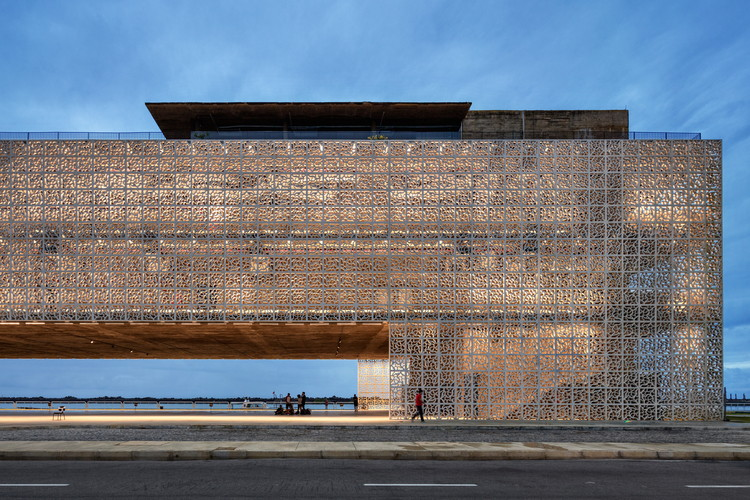

O Museu Cais do Sertão foi idealizado como parte do projeto de integração do Porto Novo direcionado à revitalização do centro antigo do Recife por meio da requalificação
de espaços que anteriormente abrigavam atividades portuárias. O espaço propõe instituir um novo paradigma de sítio museológico, cultural e educacional, tornar-se centro
de referência, articulador de parcerias envolvidas na propagação de um eixo cultural e educacional do litoral ao interior da Região Nordeste
Texto retirado de: https://caisdosertao.pe.gov.br/